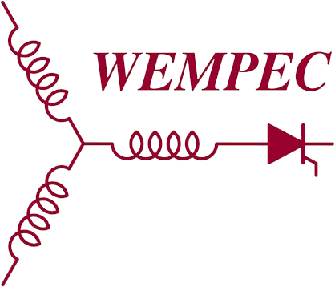
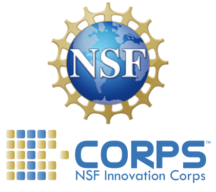
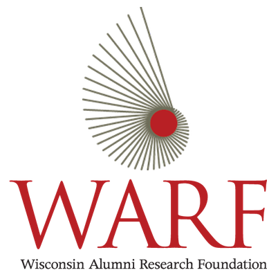

Nathan is a PhD candidate at the University of Wisconsin–Madison in Electrical Engineering as part of WEMPEC. His PhD research focuses on control of electric machines, specifically targeting magnetically levitated motor systems such as bearingless motors.
For his MS research project, Nathan designed and built the Advanced Motor Drive Controller (AMDC) platform, which is a collection of open-source hardware and software for controlling advanced electric machines. Check it out at amdc.dev or read the docs at docs.amdc.dev.
When Nathan is not in the research lab collecting data (using the AMDC) or writing his latest paper (appreciating $\LaTeX$), he enjoys building things, tinkering, and writing about it. His blog archives his ideas/projects/experiences over the years, ranging from website design to embedded systems to brunch reviews.
Nathan’s CV is available here.
Publications
Browse Nathan’s publications on his Google Scholar page.
Find something you want to read? Email Nathan and he will gladly send you a copy!
Education
University of Wisconsin–Madison
Ph.D., Electrical and Computer Engineering
Expected May 2024
Thesis: Sensorless Bearingless Motors: Modeling and Control Methods
M.S., Electrical and Computer Engineering
December 2021
Thesis: Open-Source Hardware and Software for Advanced Motor Drives
B.S., Computer Science
May 2019
Graduated with Distinction, Varsity Men's Rowing letterman
Experience

Severson Research Group
· severson.wempec.wisc.edu
January 2020 – Present
Research focuses on advanced high-performance control of electric motor systems. Specific interests include control applied to bearingless motors: current regulation, state observers, self-sensing control techniques to estimate rotor eccentricity. Co-design of electric motor for improved self-sensing control performance.
Tesla
· tesla.com
Summer 2022
Worked on sensorless field-oriented control algorithms for small PM motors with ultra-low-cost drivers implemented using fixed-point math; SIL testing; NVH reduction techniques; hardware testing and validation.
BETA Technologies
· beta.team
February – December 2019
Developed inverter embedded hardware and firmware for aircraft electric propulsion unit. Hardware device selection; design review; board assembly and testing; firmware driver development; control algorithm design and implementation; motor dyno testing to >100 kW. Implemented PMSM field-oriented control using both encoder and self-sensing techniques.
Awards
Grainger Power Engineering Graduate Award
Received April 2023
Recognition of scholarly achievements in the field of power engineering. 1 of 3 graduate awardees at UW-Madison.
Wisconsin Distinguished Graduate Fellowship
Received Spring 2020
Direct support of graduate studies provided by the UW-Madison Graduate School. Awarded to about 200 graduate students at UW-Madison each year.
Grants & Funding

NSF Innovation Corps (I-Corps) Program
Spring 2023
$50k awarded for entrepreneurial training program that facilitates the transformation of invention to impact. Learn about entrepreneurship, explore commercialization of research, perform 100+ customer discovery interviews.

WARF Accelerator Electrification Challenge Grant
2022-2023
$25k awarded to further research into cost- and weight-saving design to sense rotor displacement in electric machines.